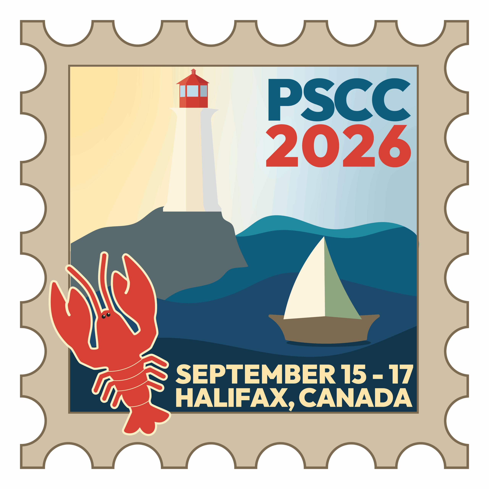
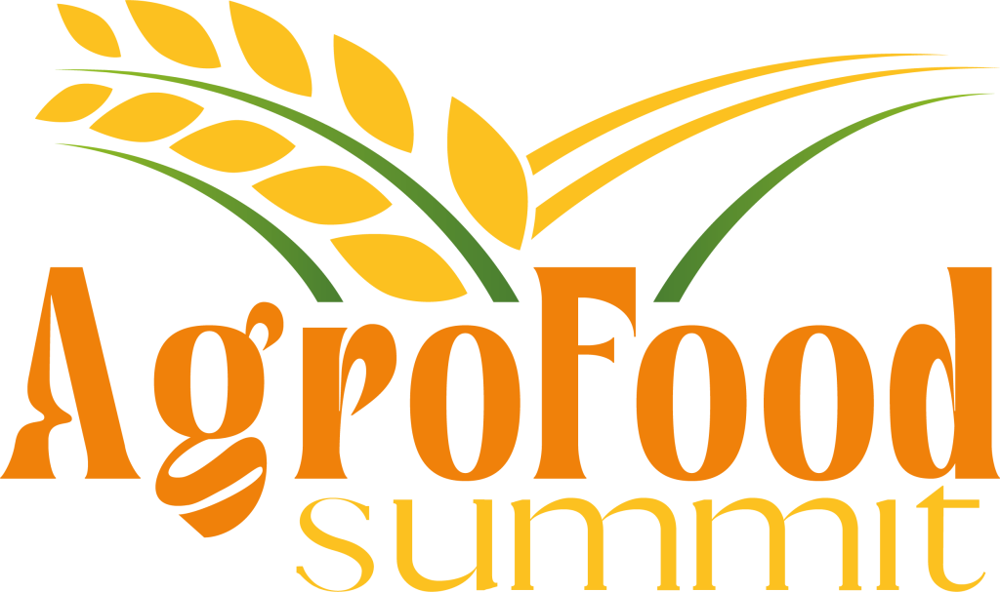

Specified in the contract.
Verified in the lot.
Quality records and traceability from intake through processing and load-out.
Read Article →
Specifications, traceability, and trade information for Canadian pulse buyers. Meet WRG at the Pulse & Special Crops Convention in Halifax and AgroFoodSummit in Mersin.
Explore Resources →Meet WRG
Whodunit Resource Group is attending these 2026 trade events. Meet our team to discuss Canadian lentils, peas, dry beans, and your next supply program.

The Westin Nova Scotian · Halifax, Canada
Meet WRG at the Canadian Pulse and Special Crops Trade Association’s convention. Discuss Canadian pulse sourcing, product specifications, packaging, and export requirements with our team.
Event information and artwork: Canadian Pulse and Special Crops Trade Association.
Hilton Mersin · Mersin, Türkiye
Join WRG in Mersin, a hub for agricultural trade linking the Black Sea, Middle East, Africa, and Asia. The summit covers grains, pulses, soybeans, oilseeds, and milling — a setting for conversations about Canadian-origin supply and logistics.
Event information and artwork: AgroFoodSummit.RESOURCE LIBRARY
Use these guides to define the crop, quality, packing, and shipment details for your next inquiry.
How grade, moisture, lot identity, inspection, and export documents are agreed and recorded.
View Quality & Traceability →Canadian lentil, pea, and bean classes, available formats, and the parameters named on an offer.
Explore Product Specifications →Destinations, hopper storage, container and bulk load-out, and FCA, FOB, CFR, CIF, or DAP terms.
Read Markets & Logistics →Pulse rotations, practical resource use, and recovering food and feed value from each lot.
View Sustainability →FEATURED RESOURCES

Quality records and traceability from intake through processing and load-out.
Read Article →
Farm rotations, product uses, and practical improvements in our operation.
Read Article →
Crop, class, grade, format, packing, and a specification sheet agreed with the offer.
Read Article →
Send crop, class, grade, tonnes, packing, port, shipment window, and preferred terms.
Explore Resources →